LOOM-8 manual
LOOM-8 turns the M-VAVE FM-1 into a pocket groovebox: eight threads of sound on a 64-step loom. Eight tracks with nine engines (six synths, a sample player, a break slicer and a drum kit), a 64-step sequencer with fourteen step tricks and parameter locks, players, twelve throws (momentary effects) per octave, a conductor that moves the song through a progression, two send effects (the reverb with the PlayStation's own reverbs among its modes), a mixer and a master section, thirty-two scenes and a song. Weave two patterns into a third, bar by bar, step by step, or one's rhythm with the other's pitch.
The loop LOOM-8 is made for: write a short pattern, add a few tricks, weave it with another, let the conductor play a progression, season it with throws while it plays, then put the scenes in order.
To see it played first, watch the LOOM-8 video.
- Quick start
- Cheat sheet
- Getting around
- Steps
- Recording
- Sounds
- Players
- Arrange, scenes and the song
- The aux tracks
- Mix and master
- Saving
- Page by page
- Screen reader
Quick start
Ten minutes from a blank project to a jam. White keys are numbered 1 to 16 from the left, black keys 1 to 11.
- A beat. Turn ALGORITHM until the tag line says T1 kit. Press SEQ. Black key 1 is the kick: press it, then white keys 1, 5, 9 and 13. Press black key 2 for the snare and press white keys 5 and 13. Press black key 3 for the hat and press every other white key. Press PLAY.
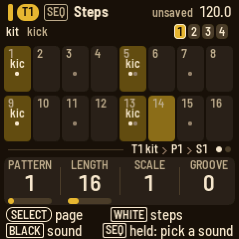
The beat playing - A bass line. Turn ALGORITHM to T2, the bass. On the Steps page, hold SEQ and play a low note: the keys are a keyboard while SEQ is down, and the note is remembered. Let go and press white keys 1, 4, 7 and 11. Hold SEQ, play another note, let go and press white key 14. Or tap REC and play the notes one after another: each one goes on the next step. Press EDIT and turn KNOB 1 while it plays to hear the shape change.
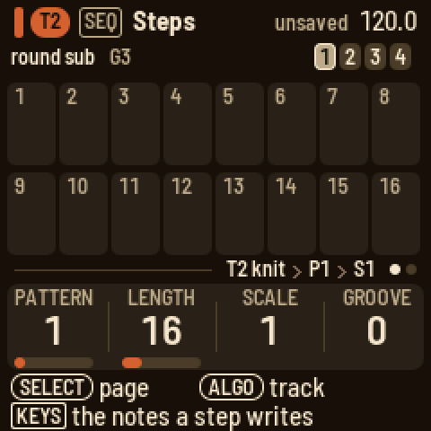
SEQ held on Steps 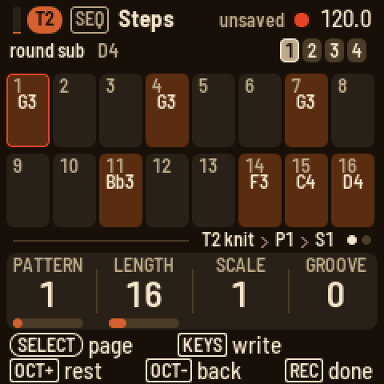
Step record - Tricks. Still on T2's Steps page, hold white key 7 and press ARP. Turn KNOB 1 to multiply and KNOB 2 to 3 for three hits. Let go. Hold white key 14, press ARP, turn KNOB 1 to jump and KNOB 2 to "either": the pattern starts to wander. Hold white key 1, press ARP and turn KNOB 1 to skip trig, so step 1 plays every other pass.
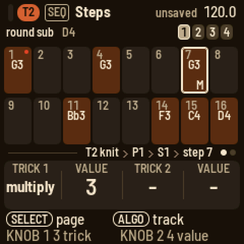
A trick on step 7 - A chord track. Turn ALGORITHM to T3. Press EDIT and turn PRESETS until a pad you like comes up. Press SEQ, hold SEQ and hold three keys together, let go and press white key 1. Hold white key 1 and press white key 8 so the chord lasts half the bar: a bar under the cells shows how far it reaches. Hold SEQ and three keys a little higher, let go and press white key 9. The cells name the chords.
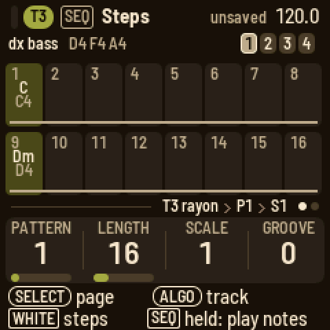
Two chords - The conductor. Turn ALGORITHM to COND (the conductor). Press EDIT: the key is C major and every melodic track follows. Play an F, then a G, then a C while it plays: everything moves with you, in the scale. Press SEQ, turn SELECT for the Bar page and press black key 4 so a step is a beat. Back on Steps, hold SEQ and play a chord, let go and press a step, and so on: four steps are a bar of progression. Or let T3's chords lead: EDIT, turn SELECT to Follow and press black key 3.
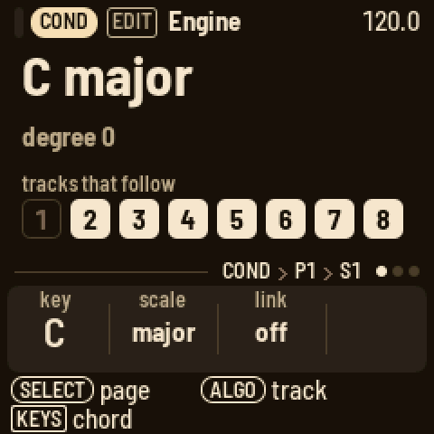
The conductor 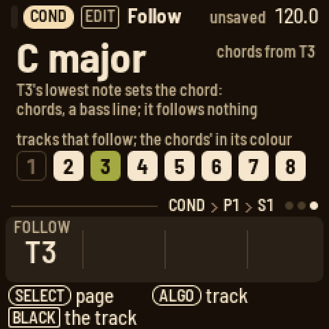
Chords from a track - Throws. Press FX and turn SELECT to its last page, Throws. Hold a low key: F3 mutes the drums, G3 stutters them, A3 repeats, B3 echoes, C4 builds, D4 plays four on the floor, E4 jumbles them. A high key does the same on the melodic tracks. Let go and the pattern comes back.
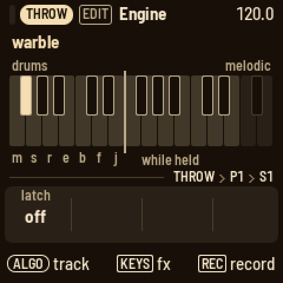
Throws - A scene. Press HOME. White key 1 is the scene playing. Press white key 2: a copy. Now change something: mute the drums with black key 1 on Arrange, or go to T2's Steps and turn KNOB 1 to P2 for a new pattern. Press white key 1 and 2 in turn: while it plays, each waits for the next bar (press it again to switch at once).
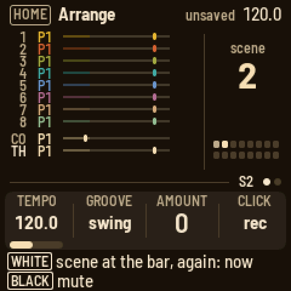
Arrange - Save. Press SAVE.
From here: hold a step to see its velocity, length, chance and pitch; hold a step and press EDIT to lock a knob on it; press ARP on T2 and turn KNOB 1 to arp; press GLO, turn SELECT to Master out and turn KNOB 4 (the pump) while it plays. Hold any button for a second and a card explains it.
Cheat sheet
The words
- Track (T1 to T8): one sound and its patterns. After T8 come the aux tracks: COND (the conductor), THROW (the throws), FX I and FX II.
- Pattern (P1 to P8): a track's steps, up to 64 of them in four bars. Each track has eight.
- Step: one cell of a pattern. It holds up to four notes (on a drum track, any of the eleven sounds), two tricks, a chance and parameter locks.
- Trick: something a step does as it plays, such as pulse, hold, multiply or jump. There are fourteen; hold a step and press ARP to give it two.
- Lock: a knob value a step sets as it plays.
- Scene (S1 to S32): which pattern each track plays, plus the mutes (a kit's sounds too) and the conductor's key.
- Song: a chain of scenes, each played for a number of bars.
- Engine: the way a track makes its sound. Six synths (knit, rayon, jacquard, bellows, cane and voile), two for samples (sample and slice) and the kit, a drum synth.
- Preset: a sound to load. 85 come with LOOM-8, from seven to eighteen for each engine, and 16 are yours.
- Player: what the keys do on a track: arp, strum or hold.
- Conductor: the aux track that moves the other tracks through a key and scale, from its own chords or from a track's notes.
- Throw: a momentary effect on the drums or the melodic tracks, from a key on FX's Throws page.
- Weave: a track's pattern crossed with another, live: bars or steps in turn, or one's rhythm with the other's pitch. Set up on the track's ARP, played on the WEAVE track.
- Groove: a timing and velocity feel. The project picks the type, each track sets how much.
- Pump: the mix (all but the drums) ducking on each kick and swelling back (Master out). A track's pump LFO does the same to one track.
How do I…
White keys are numbered from the left, 1 to 16, and black keys the same way, 1 to 11. "Hold HOME and press…" means keep HOME down while you press the next thing.
| How do I… | Do this |
|---|---|
| pick a track | Turn ALGORITHM on any page. |
| write a beat | Press SEQ. On a drum track, black key 1 is the kick: press it, then white keys 1, 5, 9 and 13. Black key 2 is the snare. |
| write a note | On Steps, hold SEQ and play the note, let go, and press a white key: the note goes on that step. |
| write a chord | On Steps, hold SEQ and hold the notes together, let go, and press a step. |
| pick a drum sound | On a drum track's Steps page, press its black key, or hold SEQ and press any key. |
| see a step | On Steps, hold its white key. The knobs show its velocity, length, chance and pitch. |
| make a note longer | Hold its step and press a later white key. A bar under the cells shows how far a note reaches. |
| nudge a step | Hold its step and press OCT− or OCT+. |
| copy and paste | On Steps, SEL: COPY PATTERN or COPY BAR, then PASTE PATTERN or PASTE BAR where it goes (PASTE LOCKS ONLY for the locks alone). A step: hold it, SEL, COPY STEP; hold another, SEL, PASTE STEP. |
| make a pattern twice as long | On Steps, SEL and DOUBLE PATTERN: it plays itself twice, to vary the second half. |
| change a step's note | Hold its step and turn KNOB 4 (a drum step too: its hits play higher or lower). |
| put a second sound on a drum step | Hold the step and press the sound's black key. |
| take one note off a step | Hold the step, press SEL, pick the note and press SEL. |
| add a trick | Hold the step and press ARP. KNOB 1 picks the first trick (pulse, hold, multiply, velocity, ramp up, ramp down, random, glide, bend, tonality, jump, skip lock, skip trick, skip trigger) and KNOB 2 its value; KNOB 3 and KNOB 4 the second. Turn a trick back to "-" to take it off. |
| set a skip's pattern | Turn its value on past "random": the same cycles come again "not on the last pass", then "only the first". |
| give a step a chance | Hold the step and turn KNOB 3. Past 99 % come the A:B cycles. |
| lock a knob on a step | Hold the step and press EDIT, ENV, FX or LFO. Turn a knob. Hold SEL and turn it to clear it; the step's SEL list has CLEAR LOCKS. |
| clear a knob's automation | Hold SEL and turn the knob: its motion and locks in the pattern go (with steps held, only theirs). |
| see the next bar | Press OCT+ on Steps. (With SEQ held, OCT is the keys' octave and PRESETS the track's sound, to try the notes before they are written.) |
| play one bar of a long pattern, or jump about in it | SEQ, SELECT to the Bar page, hold SEQ and press black key 1 to 4: a bar to jump to; two held loop them; one tapped twice loops that bar. |
| set the track scale | On Steps, turn KNOB 3. Or on the Bar page of a synth track, press a black key: 1, 2, 3, 4, 5, 6, 8, 16 sixteenths a step, or black key 9 for half a sixteenth. |
| change the pattern | On Steps, turn KNOB 1. Playing, it comes at the next bar line: the knob reads NEXT 1>2 and the tag line "next P2" until it does. |
| weave two patterns | On the track, ARP, its last page Weave: a black key for the track woven in, a white key for its pattern, KNOB 3 the rule. It plays woven from then on; to bring it in by hand instead, KNOB 4 to "on WEAVE", then on the WEAVE track (ALGORITHM) hold that track's white key. |
| change the sound | Press EDIT and turn PRESETS: the engine's own sounds, "BASS 3/11": what the sound is for and where you are. SEL changes the engine. |
| edit a drum sound | On a drum track, press EDIT and press the sound's black key. The knobs are the model's own four. Turn SELECT for the model, random, pan and volume; its SEL list has the play mode. |
| shape one drum | On a drum track, press ENV and press the drum's black key: its own attack, hold, decay and lag. Turn SELECT for its filter: PRESETS picks low-pass, high-pass or band-pass, the knobs cutoff, resonance, envelope and drive. |
| play a sample | On a drum track, turn a key's model to sample. On a synth track, SEL and ENGINE: sample. The sample knob picks it. |
| load my own samples | Open <https://charlesvestal.github.io/fm1-loom/samples/> in Chrome or Edge with the FM-1 connected by USB: add, replace, rename, reorder or remove them, then Send. They come after the factory samples, as user 1, user 2 ... |
| chop a break | On a synth track, SEL and ENGINE: slice. Each key plays a slice of the break, F3 the first; write them on the steps in any order. Load your own with tools/loom_samples.py load "amen.wav@2" (a loop of 2 bars). |
| change the filter | Press ENV and turn SELECT to Filter. PRESETS turns the filter type. |
| give a sound some character | Press FX: the Character page. PRESETS turns the type (drive, fold, crush, ring, tilt, tape, sampler); the knobs are its amount, tone and mix. |
| use the effects | Press FX and turn SELECT to Sends: the track's sends. Turn on for FX I and FX II; PRESETS picks the effect. |
| play | Press PLAY: every track starts from step 1. |
| record live | Hold REC and press PLAY: it records from step 1 at once (after the count-in, if set). |
| record while playing | Hold REC and play: it records while you hold it. Hold REC and press PLAY to keep it on. |
| record a knob's motion | While it plays, on a sound page, hold REC and turn the knob: it is recorded while you hold REC. |
| set the click, count-in, quantise | Stopped, hold REC and turn the knobs: CLICK, COUNT, QUANT, MODE (overdub or replace). |
| record step by step | Stopped, on Steps, tap REC. The red cursor starts after the last note; each key (or chord) you play writes it and moves on. OCT+ leaves a rest, OCT− goes back. REC again ends. |
| undo | Hold HOME and press REC. Hold HOME and press PLAY to redo. |
| set the tempo | Press HOME and turn KNOB 1. Hold HOME and turn it for tenths. On any page, hold HOME and turn SELECT. |
| use a throw | Press FX and turn SELECT to Throws. Hold a key: the lower octave works on the drums, the upper octave on the melodic tracks. Hold REC while it plays to record them into the THROW track. |
| make a new scene | Press HOME and press an empty white key. It becomes a copy of the scene playing. OCT+ puts scenes 17 to 32 on the white keys. |
| switch scenes while playing | On Arrange, press the scene's white key: it starts at the next bar. Press it again to switch at once. To wait for the end of T1's pattern instead, set SEL's SCENES SWITCH to "pattern end". |
| mute a track | On Arrange or Mix, press its black key. On Mix, hold it to solo the track while you hold. |
| mute one drum sound in a scene | On Arrange, hold the kit track's black key and press white keys 1 to 11. |
| make the whole mix pump with the kick | Press GLO, turn SELECT to Master out and turn KNOB 4 (pump). SEL picks what drives it and how fast it swells back. |
| solo a track | On Mix, hold its black key (several held: they solo together). Let go, and the mutes come back. |
| sweep a few tracks together | Press GLO, turn SELECT to LFO: the shared LFO. Black keys pick the tracks, KNOB 4 what it moves. |
| play a progression | Turn ALGORITHM to COND (the conductor). Press EDIT and play a chord: it moves the tracks that follow. Press SEQ and press a step: the chord goes on it. Set the scale to 4 on the Bar page so a step is a beat. |
| let a track lead the chords | On COND, press EDIT and turn SELECT to Follow. Press the track's black key: its lowest note sets the chord for the others (a chord part or a bass line). The same key again: off. |
| get new sounds for the band | Press HOME, press SEL and pick RANDOMIZE PRESETS: T2 to T8 each get a random preset of their part. SEL says yes. |
| save | LOOM-8 saves by itself when stopped and quiet. SAVE saves at once; hold SAVE and press white key 1 to 3 to save to that slot. |
| keep a sound | On a sound page, hold SAVE and press a white key. The sound becomes that user preset. |
| load a project | Press HOME, press SEL, turn ALGORITHM on LOAD PROJECT to the slot, and press SEL. NEW PROJECT starts an empty one in a free slot, its sounds picked at random (RANDOMIZE PRESETS: new ones). |
The buttons
| Control | What it does |
|---|---|
| PLAY | Starts (every track from step 1) and stops. A track whose scale or length you change stays in phase with the rest. On the Song page, it plays the song from the slot picked. With REC held, it starts live recording. |
| REC | Held while playing: records while held. Stopped: a tap arms step record. Held while playing on a sound page, the knobs you turn are recorded; held while stopped (or on Steps), the knobs are the record settings (click, count-in, quantise, mode). |
| SEL | Opens a list of this page's settings and actions. With a step held, its notes. When LOOM-8 asks a question, SEL means yes. |
| HOME | Opens Arrange. On Arrange, it opens the Song page. Held, it is the shift key for buttons and knobs: undo and redo, the fine tempo, the scenes on PRESETS. When LOOM-8 asks a question, HOME means no. |
| SEQ | Opens Steps. Its page 2 is Bar. Hold it on Steps and the keys play the track and set what a step writes (OCT their octave, PRESETS the track's sound). Hold it on Bar and black keys 1 to 4 jump to a bar or loop bars. |
| EDIT | Opens Engine. Its page 2 is Play, page 3 Play 2 (the octave); knit and rayon have a page 4, Sub, the engine's second set of knobs; a sample track in a loop mode has its Loop page second. On a drum track, page 2 is the key's model, random, pan and volume, page 3 its sends. The conductor's pages are its key, the routing and Follow. |
| ENV | Opens Envelope (a drum track: lag, attack, random, length), then Filter, then the filter's envelope. |
| FX | Opens Character, the track's own effect. Then Sends, the track's sends to FX I and FX II. Then FX I and FX II, the two effects. |
| LFO | Opens LFO. Its page 2 has the type's fourth and fifth knobs. |
| ARP | Opens Players. With the arp, page 2 is its second set of knobs and page 3 is hold. |
| GLO | Opens Mix. Turn SELECT for Master EQ, Master color, Master out, LFO (the shared LFO) and Setup. |
| SAVE | Saves. Hold it and press a white key to save to a slot, or to keep a sound. |
| OCT− / OCT+ | Move the keys an octave. On Steps, show the bar before or after (with SEQ held, the keys' octave); with a step held, nudge it. In step record, move the cursor. On Arrange and Song, scenes 1 to 16 or 17 to 32 on the white keys. |
| SELECT | Turns to a button's next page. In a list, it moves up and down. |
| ALGORITHM | Picks the track. In a list, it changes the row's value. |
| PRESETS | Steps to the next item of whatever the page shows: a preset, a drum key, an effect, a pattern, a drum sound, a scene. |
| KNOB 1–4 | Set the four values at the bottom of the screen. |
Hold any button for a second, and a card explains it. The two lines at the bottom of the screen always say what each control does on the page you're on.
Getting around
The screen
From top to bottom, the screen has five parts.
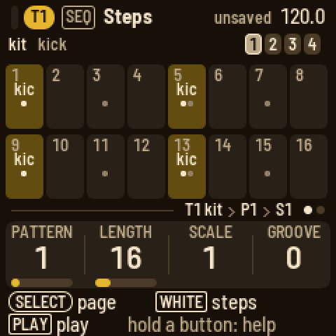
- The header shows the page's button and name, the tempo, a red dot while recording, and "unsaved". On a track's pages, the track's pill comes first, and before it a small meter: what that track is playing now, so you can tell its notes from the others'. Messages and questions cover it for a moment.
- The middle is the page itself.
- The tag line says where you are: the track and its engine, the pattern and the scene, such as "T3 knit › P2 › S1". The dots at the right say which of the button's pages you're on.
- The knob strip shows the four knobs' names and values, each with a bar in the track's colour. The knob you just turned shows in the text colour.
- The two bottom lines say what the encoders and the keys do here.
The screen comes in two themes (Setup's THEME knob): tape deck, warm brown-black with cream text, and blueprint, deep blue with white lines. In both, every instrument track has its own colour; in tape deck T1 mustard, T2 rust, T3 olive, T4 teal, T5 blue, T6 plum, T7 tan, T8 sage. A track's steps with notes are its colour, dimmed; what sounds now is its colour, bright: the step playing, the scene playing, a meter. On Arrange and Mix every track keeps its colour, so you can tell them apart at a glance. Cream (or white) outlines are you: the held step, the cursor, the knob you turned. Red is only for recording and for locks.
Messages
Short messages cover the header for a moment. i is news, ✓ is something done, an arrow is an undo or redo, ? on red is a question that waits for SEL or HOME, and ! means LOOM-8 could not do it and says why.
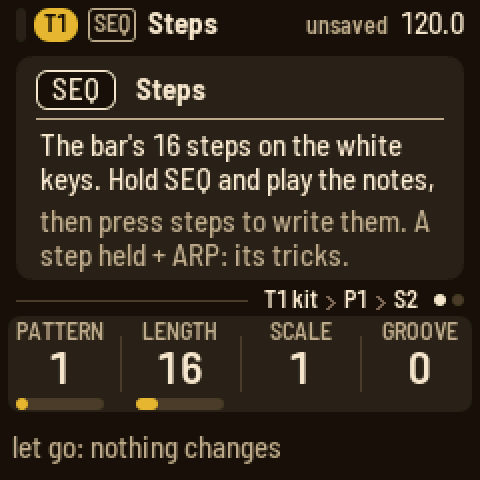
The tracks
Turn ALGORITHM to pick a track: T1 to T8, then COND (the conductor), THROW (the throws) and WEAVE. On Mix it goes through Mix's strips instead: T1 to T8, then FX I and FX II, the effects' returns. The keys play the track you picked on the Engine, Play, Envelope, Filter, LFO and Players pages. On a drum track, the black keys are the eleven drum keys, and the white keys play them too. On FX I and FX II, the keys play the instrument track you picked last, so you hear the effect.
The lights
PLAY is green while playing and red while recording. REC lights while recording or armed. SAVE lights when there is something to save. The page's button is lit. On Steps, the steps with notes glow and the step playing is bright. On Arrange, the scenes in use glow and the one playing is bright. The muted tracks' black keys glow. With Setup's LIGHTS on, the other buttons glow too.
Steps
Press SEQ. The main band shows one bar of the pattern as 16 cells, and the 16 white keys are those cells. The top line says what a press writes: on a drum track, the sound shown; on a synth track, the remembered notes, which are the last keys you held together on a play page; on the THROW track, the last effect you played. The four squares at the right are the bars. OCT− and OCT+ show the bar before or after.
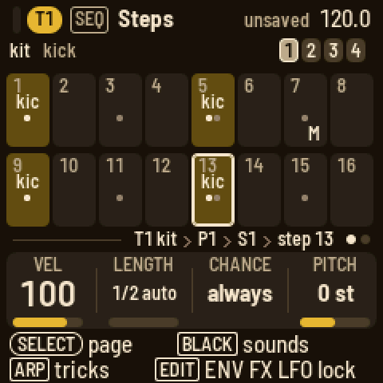
- Hold SEQ and play keys to choose what a step writes: the keys play the track, and the ones you hold together become the remembered notes (a chord). On a drum track, the key you play becomes the sound shown. While SEQ is down, OCT− and OCT+ move the keys' octave and, on a synth track, PRESETS steps through the track's sounds, to try the notes before they are written. Let go of SEQ and nothing else changes.
- Tap a white key to put the remembered notes on that step, or to clear the step.
- Hold a white key to see the step (held longer than a tap, it stays as it is). KNOB 1 is its velocity (on a drum track, the velocity of the sound shown: each sound of a step has its own; the black keys pick the sound), KNOB 2 its length in steps, KNOB 3 its chance (always, a percentage, then the A:B cycles: on the A-th of every B passes) and KNOB 4 its pitch: on a synth track its notes move by semitones, a chord together; on a drum track the step's hits play up to 24 semitones from their key's pitch, the step's own note, apart from the key's pitch knob and its locks. OCT− and OCT+ nudge it, earlier or later.
- Hold a step and press a later white key to make its note reach that step. KNOB 2 takes it further, up to the pattern's whole length (in quarter steps to 16 steps, then whole steps); a note held past the end of the pattern goes on round from its start. The bar under the cells shows how far it reaches, with an arrow where it goes on onto another bar or comes in from one.
- Hold a step and press a black key on a drum track to put that sound on the step, or take it off.
- Hold a step and press SEL for a list of its notes. Pick one and press SEL to take it off. The list also has COPY STEP; hold another step (or several) and its list has PASTE STEP (the notes and locks) and PASTE LOCKS ONLY (the locks onto the notes already there).
- Hold a step and press ARP for its tricks (below).
Tricks
Hold a step and press ARP. The knob strip shows the step's two tricks: KNOB 1 picks the first and KNOB 2 its value, KNOB 3 and KNOB 4 the second. Turn a trick back to "-" to take it off. Hold several steps and they all take the same turn. Let go of the steps when you are done.
| # | Trick | Values: 1 to 9, then random |
|---|---|---|
| 1 | pulse: play the step again on the next steps | 1 to 9 times |
| 2 | hold: keep the note over the next steps | 1 to 9 steps |
| 3 | multiply: retrigger the step | 1 to 9 hits |
| 4 | velocity | 4, 8, 16, 32, 64, 100, 112, 127, 0 |
| 5 | ramp up: the note climbs the scale each pass | 2 to 6 steps over one octave, then over three |
| 6 | ramp down | the same |
| 7 | random: another note of the scale each pass | the same |
| 8 | glide: slide into the note | 10 % to 80 %, then off |
| 9 | bend | down-up, up-down, bumps, springs, fades, random 1 and 2 |
| 10 | tonality: how the step takes the conductor | ignore, transpose only, octave up, fifth up, third up, chromatic up, chromatic down, quantize 33 %, 66 %, 100 % |
| 11 | jump: move the playhead | to step 1, 5, 9, 13, forward, back, either, stay, align |
| 12 | skip lock: the locks play every Nth pass | a cycle of 1 to 9 |
| 13 | skip trick: the other trick plays every Nth pass | a cycle of 1 to 9 |
| 14 | skip trigger: the step plays every Nth pass | a cycle of 1 to 9 |
For the three skips, the value goes on past random: the same cycles again, playing all but the last pass, then again playing only the first. A new trick starts at its default: pulse and hold 4, multiply 2, velocity 64, the ramps and random 4, glide 40 %, bend down-up, tonality fifth up, jump forward, the skips a cycle of 2.
Pulse and hold keep time: the playhead goes on, the steps they cover give way to them, and the track carries on where it would have been. On a drum track only the sounds on the trick's step give way: the other sounds play their steps as written, so a pulsed kick does not stop the hats.
A step's chance and its skip trigger decide whether the step happens at all. When it does not, its tricks do not either, a jump included: a jump with a 25 % chance jumps about one time in four. A jump back, or stay, starts a new pass, so the A:B cycles, the skips and the ramps keep counting inside the loop it makes.
A cell shows its note, two notes one over the other, or the first note and how many more ("+2"). A chord shows its name with its bass note under it; a name too long for the cell is shortened (CM7 for maj7, C+ for aug, Co for dim, Cs2 and Cs4 for the sus chords), and one still too long (C#M7, Ebm7) puts the root over its quality. An effect on the throw track shows three letters (PAN) over its group (drm or mel). On a drum track, every sound on the step has a tick, the shown sound's bright, so the whole beat is visible while you edit one sound. A bar along the foot of the cells shows how far a long note reaches; an arrow at the bar's end means it goes on. The tricks' letters sit at the bottom right, a percent sign marks a chance, and a red dot marks locks.
Locks
Hold a step and press EDIT, ENV, FX or LFO. The knob strip becomes that module's four knobs for the held step (turn SELECT for its other pages: ENV has the envelope, the filter and the filter's envelope; FX the character and the sends), showing "–" where the step has no lock and the locked values in red. Turn a knob to lock a value on the step. Let go of the step to go back. A lock lasts until the next step that plays without one, which plays the knob's own value again. Hold SEL and turn a knob to clear that knob's locks on the steps held (with no step held, its motion and locks in the whole pattern); the held step's SEL list has CLEAR LOCKS for all of its locks (a drum step's pitch stays). While recording, a knob you turn writes locks on the steps as they play. The Bar page's SHAPE knob turns a track's locks into a line: each holds until the next lock and moves toward it.
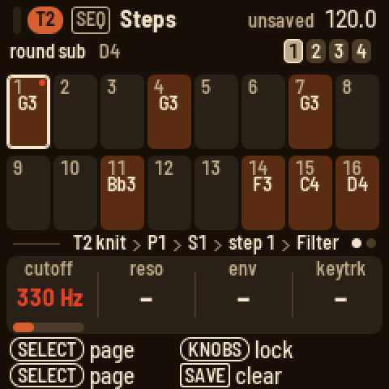
The Steps knobs and the Bar page
With no step held, KNOB 1 picks the pattern (P1 to P8), KNOB 2 the length in steps, KNOB 3 the track scale (how many sixteenths a step takes, from 1/2 to 16) and KNOB 4 the track's groove amount.
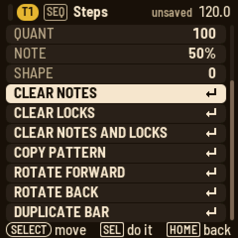
Turn SELECT for the Bar page: quantise for live recording, the note length of new steps as a percentage of a step, the groove amount and the shape. The keys write steps as on Steps (a step held: its knobs, tricks and locks; on a kit the black keys pick and place its sounds); the box of the bar they write is outlined, OCT- and OCT+ move it. On a synth track the black keys set the track scale: 1, 2, 3, 4, 5, 6, 8, 16 sixteenths a step on black keys 1 to 8, half a sixteenth on black key 9. Press SEL on either page for the actions: clear notes, clear locks, clear both, copy the pattern or the bar shown, paste it (a bar onto the bar shown; the copy is read when you paste, and a kit's steps go only onto a kit) or its locks alone, rotate it a step forward or back, duplicate the bar into the next, or double the pattern (twice as long, playing itself twice, its locks too: a 16-step pattern becomes 32, to vary its second half).
On the Bar page, hold SEQ and press black keys 1 to 4: they are the pattern's bars. One key jumps to that bar at the next bar line and plays on from there (a loop you had is let go). Two held loop that range of bars; one tapped twice loops that bar. The loop is saved with the pattern (it is per track and per pattern): only the loop plays, so a bar you are editing comes round at once. A bar under the boxes marks the loop, a small bracket the jump waiting for its bar line, and Arrange draws the loop bright inside the pattern's line with the playhead repeating in it. Stopped, the keys set the loop at once. (SEQ held on the other pages still picks the notes a step writes.)
Weave
A weave crosses what a track plays with another pattern, live, while the song plays: nothing is written. You set a weave up on the track, and from then on that track plays woven (the other track plays as it was). Or you keep it for the WEAVE track, to bring in by hand.
Set it up. On a track, press ARP and turn SELECT to its last page, Weave. Press a black key for the track to weave in (1 to 8 the tracks, 9 COND, 10 THROW; the same key again: none) and a white key, 1 to 8, for its pattern. KNOB 1 (WITH: the track), KNOB 2 (PATTERN: its pattern) and KNOB 3 (RULE) say the same. The page says it in words ("T2 weaves with T1", "by rhythm: T2 P1's rhythm, T1 P1's pitch") and draws a bar three ways: the track's own steps, the other pattern's, and what plays, each step in the colour of the pattern it comes from. A pattern longer than a bar: OCT+ and OCT− go through its bars ("bar 2 of 4"). Its last line says whether it plays (on), or which WEAVE track key brings it in. The rules:
| Rule | What the track plays |
|---|---|
| bars | its bars and the other pattern's in turn: its bar, the other's bar ... |
| steps | its steps and the other's in turn |
| rhythm | its rhythm, playing the other pattern's pitches in their order, round and round |
| pitch | the other pattern's rhythm, playing this track's pitches |
Each pattern loops by its own length, and the turns count from the start, so a one-bar pattern woven by bars plays its own bar, then the other's. A track can weave with any track: a drum track's sounds become notes on a melodic track (a ladder from C3: the kick C3, the snare Eb3, the hat F3 ...), and a melody's notes become a kit's sounds; the throw track weaves only with throws. The conductor weaves too: a progression with another.
When it plays. KNOB 4 on the Weave page, PLAYS: always (as soon as it is set up: the default) or on WEAVE, only while the WEAVE track's key for the track is on (held, latched, or on its steps).
Play it. For a weave set to PLAYS on WEAVE, turn ALGORITHM to WEAVE. Its white keys 1 to 10 are T1 to T8, COND and THROW: hold one and that track weaves while you hold it; the key lights, and so does its box on the screen. KNOB 1, latch, makes a tap start a weave and the next tap stop it. Hold REC while it plays and the weaves you play are written onto the WEAVE track, each from the step it started for as long as it lasted, and the song plays them back.
The WEAVE track's steps. On SEQ its steps show the tracks they weave and, under them, how long. Tap a step to put on it the tracks you last wove (again: clear it); hold a step and press black keys 1 to 10 for its tracks and a later white key for its end. KNOB 1 picks its pattern (each scene keeps its own), KNOB 2 its length (16 to 64 sixteenths; with a step held, the step's). SEL clears the pattern.
Keep it. SEL on the Weave page has KEEP AS PATTERN: the weave written into the track's first empty pattern, to edit like any other. A pattern woven with a copy of itself, shifted (copy, ROTATE FORWARD, weave it by steps), makes variations; a drum pattern's rhythm with a melody's notes makes a riff.
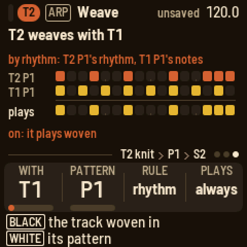
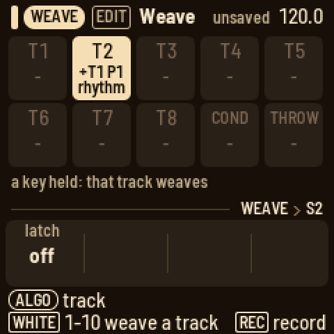
Recording
- Live recording: hold REC and press PLAY. Every track starts from step 1 and recording starts at once (after the count-in, if one is set); the keys write steps as you play, quantised by QUANT, and chords land on one step together. Press PLAY to stop.
- While playing: hold REC and play. It records only while you hold REC. Hold REC and press PLAY to keep it on; press REC again to turn it off.
- Motion: while recording, a knob you turn on a sound page (Engine, Envelope, Filter, Character, Sends, LFO ...) is written onto the steps as they play, as locks. To punch it in, hold REC while it plays and turn the knob: it records while you hold REC, the keys too.
- Chords on the conductor: turn ALGORITHM to COND and record the same way. Each chord lands on the nearest step (set its scale to 4 on the Bar page, so a step is a beat), and a new chord replaces the one that was there.
- Record settings: stopped (or on Steps and Bar), hold REC and turn the knobs: CLICK (off, while recording, on), COUNT (a count-in of off, 1 or 2 bars), QUANT (how far notes are pulled onto the steps) and MODE (overdub adds to the pattern; replace clears the steps the playhead passes as you record over them). Holding REC to turn them changes nothing else.
- Step by step: stopped, tap REC. On Steps the keys become a keyboard and a red cursor marks the step they write, starting after the pattern's last note. A key, or keys held together, writes the step and the cursor moves on when you let go. OCT+ leaves a rest, OCT− goes back a step. On a drum track the sound is added to the step. Tap REC again to stop. It works on the sound pages too, with a strip of the bar along the foot of the screen.
- Throws you hold while recording are written into the THROW track's pattern.
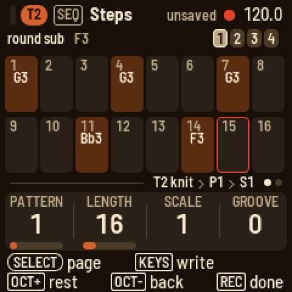
Hold HOME and press REC to undo the last change. Hold HOME and press PLAY to redo it. One stage, whatever changed last: a pattern with its locks (CLEAR LOCKS too), a track's sound (or T2 to T8 after RANDOMIZE PRESETS), the master, or the song, scenes and weaves.
Sounds
Press EDIT. The Engine page shows the track's engine, a picture of it that moves with the knobs (and with their motion and locks as it plays), and its four knobs with their values from 00 to 99. Turn PRESETS for the engine's next sound: its factory presets, then the user presets saved from it. The message says what the sound is for and where you are, as in "PAD 3/11". The roles are bass, lead, keys, pluck, bell, stab, brass, strings, pad, voice, chord, fx, drum and loop; a user preset says "PRESET". Each engine's presets run from its own plain sound through basses, leads, keys, plucks and bells to pads. Most are dry. Pads, strings, voices and bells send to the reverb, and some plucks and leads to the delay. Press SEL for the list: ENGINE changes the engine and loads its first sound, then a preset, SCRAMBLE for a random sound, SAVE AS PRESET, RESET SOUND, and whether the track FOLLOWS CONDUCTOR.
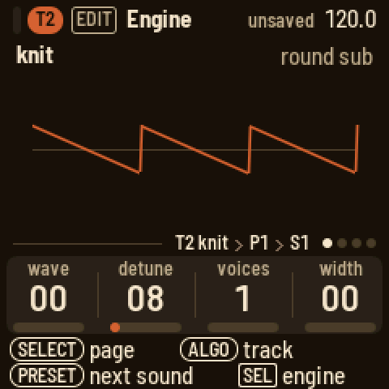
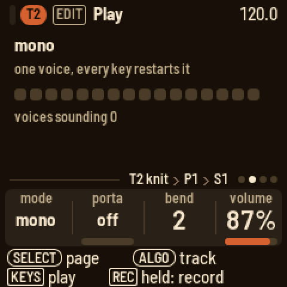
| Engine | Knobs | Presets |
|---|---|---|
| knit | wave, detune, voices, width | 11 |
| rayon | bright, ratio, edge, tine | 10 |
| jacquard | table, scan, bend, ripple | 11 |
| bellows | stops, pedal, rotor, rate | 9 |
| cane | model, timbre, color, damp | 8 |
| voile | model, timbre, color, breath | 7 |
| sample | sample, start, length, mode | 18 |
| slice | sample, slices, pitch, gate | 11 |
| kit | the shown key's model knobs |
Knit and rayon have a second set of knobs: EDIT, then SELECT to the Sub page.
Knit
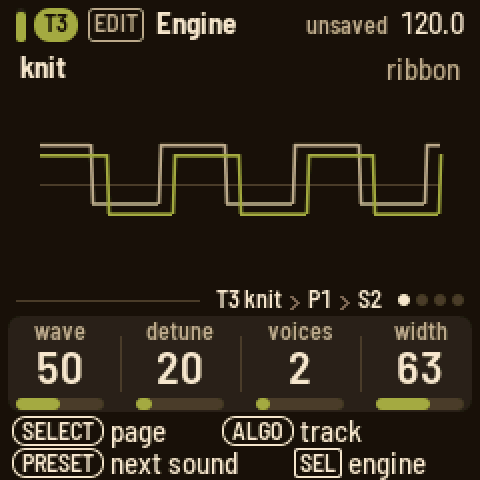
Knit is the everyday subtractive voice: basses, brass, strings, stabs, pads. wave goes from a saw through a square to a narrow pulse (an LFO on it is PWM). voices stacks one to seven of that wave, the unison: detune spreads their pitches, fine at first and wide at the end, and width opens them across the stereo field. With one voice, detune is a slow drift of the pitch instead.
The Sub page: osc 2 is one more of the wave, 24 semitones either way of the note, and level its level (0 is off); sub is a sine an octave down; noise adds noise. detune tunes osc 2 too, up to 20 cents above its interval, at any number of voices: osc 2 at 0 semitones with a little detune is the classic two oscillators beating.
A wide unison costs more than an ordinary voice. So knit plays at most six voices, five with seven in its unison; a new note past that takes its oldest.
Rayon
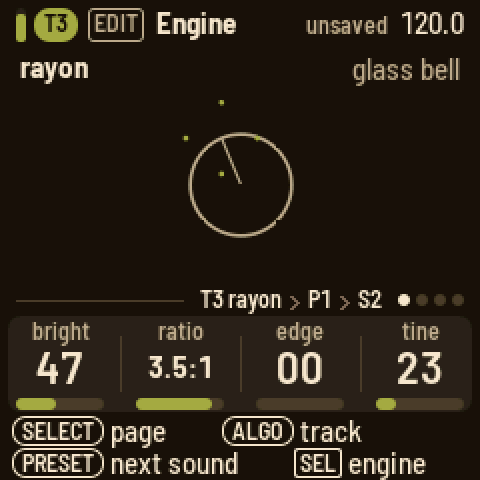
Rayon is two-operator FM, the DX way: e-pianos, bells, mallets and basses. bright is how much the modulator moves the carrier (a soft note gets less of it). ratio is the modulator's pitch against the note: the left half a 1:1 detuned for a slow beating, the right half the ratios from 0.5:1 to 8:1, the bells' inharmonic ones among them. edge feeds the modulator back on itself, from a sine toward a saw. tine is a high partial struck with the note and gone in a quarter of a second, by how hard you play: an e-piano's bark.
The Sub page: fall is how fast the brightness falls from the start of the note (0 holds it), floor how much of it is left, and keyscale makes high notes less bright.
Jacquard and bellows
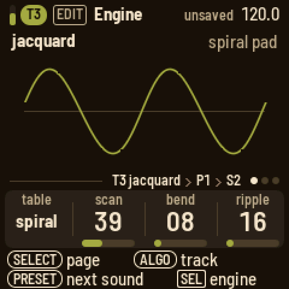
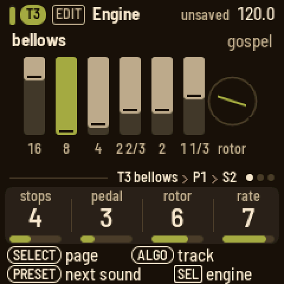
Jacquard plays wavetables. table picks one of nine: shapes, nasal, grit, vocal, spiral, fold, octaves, glass and chirp. scan moves through its frames, bend bends the wave's shape, and ripple wobbles it with a second oscillator, slow at first and up to the note's own rate.
Bellows is the organ: six drawbars. Its four knobs go from 1 to 8. stops picks the registration: transistor, combo, jazz, gospel, rock, theatre, pipe or church. pedal adds the low 16' bar (1 is none), rotor how deep the rotating speaker swirls (1 is none) and rate how fast.
Cane and voile
Two engines from Mutable Instruments' Braids, Émilie Gillet's macro oscillator, each a family of its models. model picks one; timbre and color are Braids' own two knobs, and what they do depends on the model; the fourth knob is LOOM-8's.
Cane is the physical models: instruments built from their parts, a string, a tube, a bell.
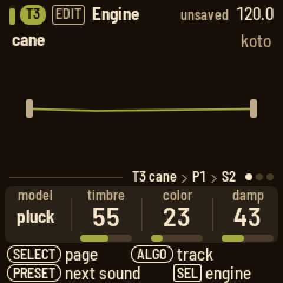
| Model | timbre | color |
|---|---|---|
| pluck | how long the string rings | how wide the pluck: hollow to full |
| bow | how hard the bow presses | where it crosses the string |
| reed | how steady the breath (less noise) | the body's tone |
| flute | how breathy, high is clean | how hard it is blown |
| bell | how long it rings; at the top it never stops | the partials pulled apart |
| drum | how long it rings | from tone to rattle |
damp darkens it: a softer pluck, a duller bridge or bore, the bell's and the drum's upper partials dying first. A pluck or a strike plays at each note; the bow and the breath start again on each note, and in legato they carry on while the pitch moves. Cane plays at most four voices at once (each keeps its strings and tubes in memory of its own); a new note past that takes its oldest. Very low notes the bow or the flute cannot reach sound an octave up.
Voile is the voices.
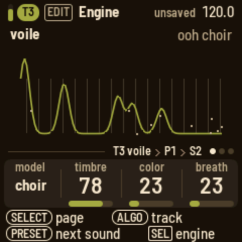
| Model | timbre | color |
|---|---|---|
| vosim | the first formant | the second formant |
| vowel | the vowel, through nine | the formants' shift |
| choir | the vowel: a, e, i, o, u | the singer: bass to soprano |
| whisper | how sharp the two peaks | how far the second is from the note |
breath is the noise in the voice: on vosim and choir the air through it, on vowel the consonant at the start of each note (none to long), on whisper the share of noise against a buzz (all the way up, a whisper).
Most of these models cost about as much as any voice or less; cane's bell, with its eleven partials, about a third more.
Kit
A drum track has eleven keys on the black keys, each with a drum model: kick, snare, hat, clap, shaker, tambourine, string (a plucked string), conga, tom, fm or sample. The kit is tuned to C: kick G1, snare G3, low tom C3, high tom G3, conga C4, string C3, fm C5. Press a black key, or turn PRESETS, to pick the key the knobs edit. The Engine page's four knobs are the model's own:
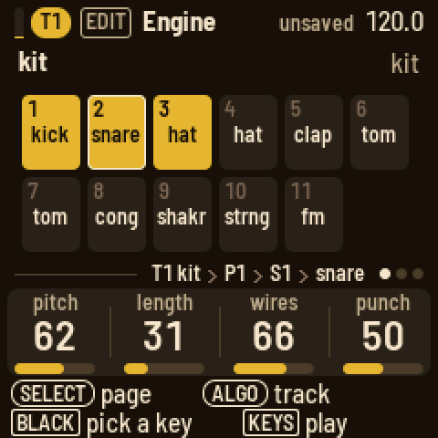
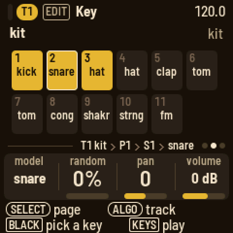
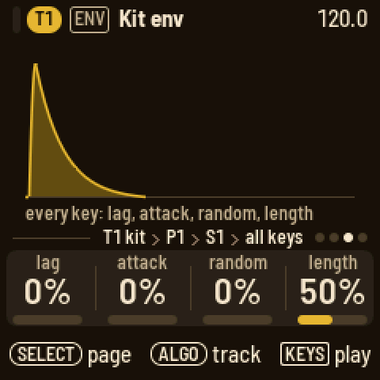
| Model | Knobs |
|---|---|
| kick | pitch, length, punch, tone |
| snare | pitch, length, wires, punch |
| hat | pitch, length, metal, focus |
| clap | tone, length, spread, tail |
| shaker | color, length, swell, return |
| tambourine | tone, length, jingle, hiss |
| string | pitch, length, bright, pluck |
| conga | pitch, length, slide, drive |
| tom | pitch, length, sweep, rate |
| fm | pitch, length, mod, feedback |
| sample | sample, pitch (24 semitones each way), start, reverse |
On every sound page of a drum track, a black key picks the key the knobs edit. Turn SELECT for the key's page: the model, random (a variation on every hit), pan and volume in dB; its SEL list has the play mode: one-shot, gated, loop, or choke groups 1 to 3. A new model starts from its own knobs.
ENV on a drum track has four pages. The first two are the shown key's own, after its model:
- Envelope: attack (a rise from silence, up to a second), hold (full level, up to a second), decay (a fall to silence; at "off" the model's own length decides) and lag (the key starts up to 60 ms late: a lazy snare, a flam). The picture draws the shape; the key's name is in the line above the knobs.
- Filter: cutoff (50 Hz to 20 kHz), resonance, env (how far the key's envelope moves the cutoff, up or down: with a decay set, a sweep on every hit) and drive (the key squared off, its level kept). PRESETS picks the type: off, low-pass, high-pass or band-pass. The picture draws the curve, and faintly where the envelope takes it.
A key left as it comes (attack, hold and lag at 0, decay off, no filter, no drive) sounds as its model alone and costs nothing. Then two pages for the whole kit:
- Kit env: lag (a delay before every hit), attack, random (every key's knobs vary on each hit) and length (every model's length scaled).
- Kit filter: the kit's bus, after the keys are summed: low cut, compression, drive and hi cut. PRESETS turns it on or off.
Each key has its own sends: FX, then SELECT to Sends, shows the shown key's sends to FX I and FX II (a black key or PRESETS picks the key). The clap into the reverb, the kick and the hats dry: a kit has no sends of its own beside its keys', and a new kit's keys come with a little reverb on the clap and the fm key, the rest dry.
Locks reach a key's own: hold a step and press ENV, and the knobs are the envelope (then, turning SELECT, the filter) of the step's key: the one shown if the step plays it, else the step's first. The line above the knobs names it.
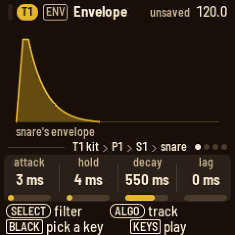
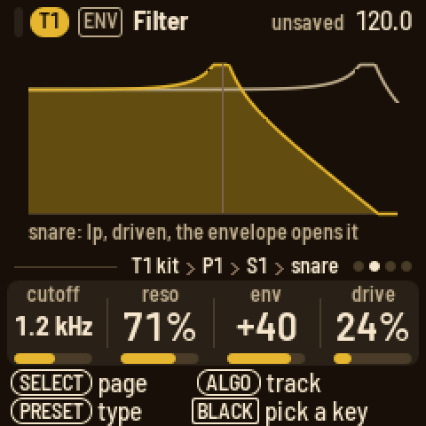
The sample model plays a sample of the bank (below) on the key: sample picks it, pitch tunes it 24 semitones either way of its own rate, start begins later in it, reverse plays it from its end back to the start. It plays to the sample's end, or as long as the key's decay lets it. Four sample keys sound at once; a fifth takes the oldest's place.
Samples
LOOM-8 carries a bank of samples: sixteen of its own (a 909's kick, snare, hat and clap; a noise sweep; piano, upright bass, strings, brass, flute and an orchestra hit; a vinyl loop; and four breaks for the slice engine: classic, heat, choke and ecstasy), then thirty-two of yours, user 1 to user 32. The sample model on a drum key and the sample engine on a synth track both play them, the knob naming each one.
The sample engine plays a sample at the pitch of the note: the sample's root note plays it at its own rate, an octave up twice as fast. Its knobs:
| Knob | What it does |
|---|---|
| sample | which one (an empty user slot plays nothing) |
| start | where it begins, 0 to 99 % in |
| length | how much of the rest plays, to its end at 100 % |
| mode | one-shot (once, then the note ends), loop (round and round; a sample with its own loop loops that), reverse (once, backwards), ping-pong (forth and back) |
The picture shows the sample's waveform, the part that plays bright, a dot where it starts and the loop's ends marked. In loop and ping-pong modes SELECT has one more page, Loop, right after Engine: loop start (where the loop begins in the part that plays) and loop len (how much of the rest it loops; "auto" at 0: the sample's own loop, or to the end). A loop is crossfaded at its point (8 ms), so it loops without a click wherever it is set. Then the track's envelopes, filter, character and LFO shape it like any engine. Its eighteen presets: piano (looped, a little tape), dusty keys (darker, the tape wobbling), piano stab (short and bright), rev piano (the piano backwards), upright and dusty bass (the upright bass, plucked; the second short and deep in the tape), strings, str stab (the section's attack, cut short) and swell (the strings backwards), brass and horn stab, flute and air flute (an octave down, a pad), orch hit and dark hit (an octave down), vinyl (the run-out groove), riser (the noise sweep) and boom (the kick, low and long).
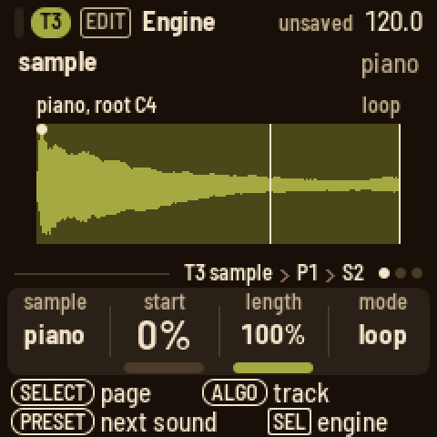
Slice
The slice engine cuts a loop (a break) into even slices and plays one a note: the sample's root note plays slice 1, the next note up slice 2, and so on, round again after the last (with eight slices, F3 to C4 are slices 1 to 8 and C#4 is slice 1 again; below the root they count back from the last). On the keys at their own octave, F3 (the lowest key) is slice 1 of a factory break. Written on the steps, the slices replay the break (slice k on every other step, for eight slices of a bar) or make a new one from its pieces: any order, repeats, gaps. Its knobs:
| Knob | What it does |
|---|---|
| sample | which loop (the factory break, or one of yours) |
| slices | 4, 8, 16 or 32 even slices |
| pitch | 24 semitones either way: down, a slice plays slower and longer than its place; up, faster and shorter |
| gate | how much of each slice plays, to all of it at 100 %; a short fade at both ends, so a cut never clicks |
A loop that says how many bars it is follows the tempo: its bars last as many bars of the song, so a factory break plays slower at a slower tempo, each slice still on its steps; the pitch knob goes on top. A sample that does not say plays at its own speed (the picture says "own speed"). In poly mode each note plays its slice to its gate and overlaps the next; mono cuts the playing slice for the new one (a quick fade, then its start); legato moves to the new slice at the same place in it, the time running on. Then the envelopes, filter, character and LFO shape it like any engine (the presets keep the filter's keytrack at 0, so every slice sounds alike). A slice plays to its gate however short the note: the gate decides the length, not the step, so slices on the steps play through as the break did. Choosing the engine from SEL takes the track off the conductor: its notes pick slices, and a chord change would move them (FOLLOWS CONDUCTOR turns it back on).
The picture shows the loop's waveform cut at the slices, each slice's gated part drawn and what the gate leaves out faint, the slice playing lit with a line where it is, a dot on slice 1. Above: the loop's name and bars, the count or the slice playing. Its eleven presets: breaks, heat, choke and ecstasy (each break in eight slices, as it was played), jungle (classic in sixteenths, driven, each slice cutting the last), roller (choke in sixteenths, tight), two step (choke in sixteenths, short, a touch of delay), dusty loop (ecstasy three semitones down, in the tape), half time (classic an octave down, dark), hits (classic's eighths one at a time, short, to play as a kit) and ghosts (classic's sixteenths, soft and short, under another beat).
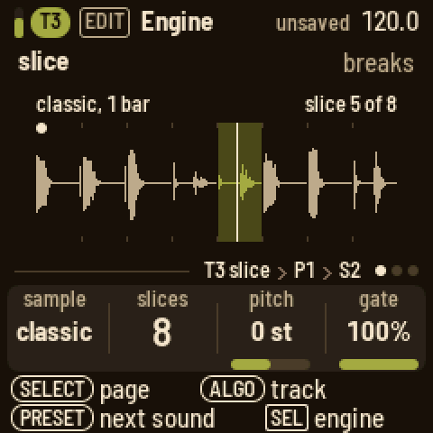
Your own samples. Connect the FM-1 (running LOOM-8) to a computer by USB and open the Samples page, <https://charlesvestal.github.io/fm1-loom/samples/>, in Chrome or Edge. Connect reads the samples on the FM-1; add files (WAV, AIFF, MP3 or FLAC: drop them on the page), replace one by dropping a file on it, rename, move up or down, remove; set each one's root note and, for a loop, its bars; then Send. The samples already there are kept exactly as they were. Quality picks the rate new samples are stored at: auto takes the best at which everything fits.
The same from the command line, from the firmware's folder:
``sh pip install mido python-rtmidi numpy python3 tools/loom_samples.py load kick.wav snare.wav "vox=ah_A3.wav" "pad=pad.wav:57" "amen=amen.wav@1%32k" python3 tools/loom_samples.py info python3 tools/loom_samples.py erase ``
load replaces the user samples with the files given, in that order: user 1, user 2... (up to 32). Each WAV (any rate, mono or stereo, 8 to 32 bit) is made mono at its sample rate and its peak evened out. NAME= names it on the screen (11 characters; else the file's name); :ROOT is the note that plays it at its own pitch on a synth track (else a note in the file's name, as "ah_A3", or C4). A loop in the WAV is kept. @BARS says the file is a loop of that many bars (1 to 16), for the slice engine: it then follows the tempo, and its root (slice 1) is F3 unless :ROOT says otherwise; the tool prints the tempo the loop has at its own speed. Trim the loop to exactly its bars first: the slices are even cuts of the whole file.
How much fits. The bank holds 214 KB of sound. Each sample keeps its own rate, and a lower rate fits more:
| rate | keeps sound up to | fits in all |
|---|---|---|
32000 Hz (%32k) | 16 kHz: bright drums and loops | 12 seconds |
22050 Hz (%22k) | 11 kHz: most sounds | 17.7 seconds |
16000 Hz (%16k) | 8 kHz: bass, pads, voices | 24 seconds |
11025 Hz (%11k) | 5.5 kHz: lo-fi, sub bass | 35 seconds |
%RATE after a file sets its rate; --rate RATE (right after load) sets the rest; else the tool picks the highest of 22050, 16000 and 11025 Hz at which everything fits, and prints each sample's rate, length and size and the seconds left at each rate. (A bar at 120 BPM is two seconds: eight one-bar breaks fit at 22050 Hz.) A sample plays at its own pitch whatever its rate, and a loop with @BARS keeps the tempo; a higher rate only costs room, and a little more of the FM-1's time while it plays. One sample may be up to about 16 seconds at 22050 Hz. The sound stops while it writes (longer for a fuller bank); then the screen says LOADED: the FM-1 has checked every byte. A sample a track was playing keeps its place: user 2 is still user 2, whatever is in it now.
The synth pages
Turn SELECT on Engine for Play: poly, mono or legato, portamento, the bend range (off, 1 to 7 semitones, an octave) and the track's volume. Again for Play 2: the sound's octave, two down to two up (a bass preset comes an octave or two down), which moves the notes it plays, the steps too. On knit and rayon, once more for Sub.
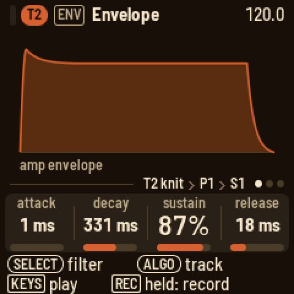
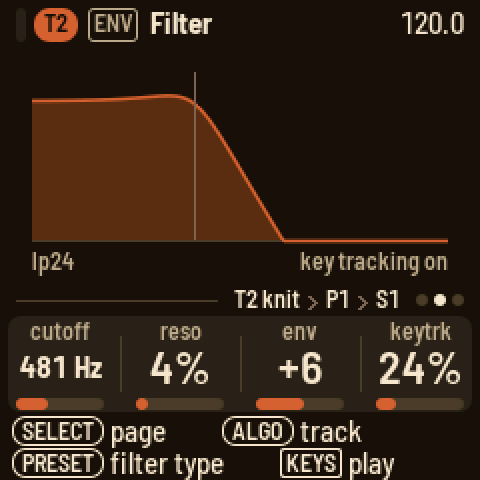
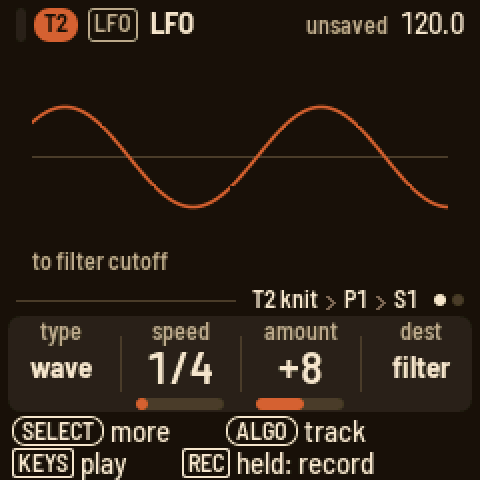
ENV has the amp envelope, then the filter: cutoff in Hz, resonance, envelope amount and key tracking, with PRESETS turning the type (lp24, ladder, lp12, hp12, dynamic, bp12; on a synth track dynamic is no filter); then the filter's envelope. FX has the track's character (below), then its sends to FX I and FX II, its pan and its level, then the two effects. LFO has the type and its first three knobs; page 2 its fourth and fifth. A new type starts from its own defaults:
| Type | Page 1 | Page 2 |
|---|---|---|
| wave | speed, amount, destination | parameter, shape |
| drift | speed, amount, destination | parameter, envelope |
| wobble | speed, vibrato, volume | envelope, shape |
| pump | source, amount, hold | release |
The speed knob is synced from 2/1 to 1/64 turned left, and free in Hz turned right. The destination is a module, and the parameter one of its four: synth (the engine's four knobs), envelope (attack, decay, sustain, release), filter (cutoff, resonance, envelope, key tracking) or voice (volume, pitch, pan, character). A destination with "free" after it runs on without restarting on each note.
Character
Every voice of a synth track has an effect of its own after the filter, before the sends: its character. Each voice is shaped on its own, so a chord driven hard stays a chord. Press FX: the Character page shows the type, what it does and a picture of it: the curve a sample goes through, or what it does to a wave. The faint line is the sound without it. PRESETS turns the type. The knobs are type, amount, tone and mix (dry to wet); at mix 0 it is off. The factory presets each have their own, so a preset is a whole sound.
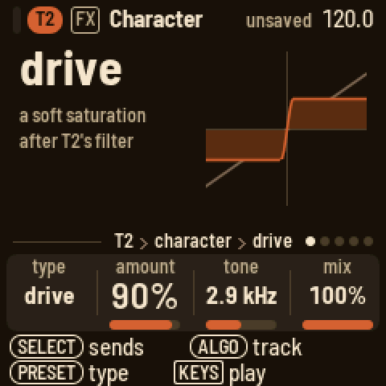
| Type | Amount | Tone |
|---|---|---|
| off | ||
| drive | how hard it saturates (the level stays) | a low-pass after it, 400 Hz to 20 kHz |
| fold | how far the wave folds over (the level stays) | the bias: off the middle, it folds one side more |
| crush | how far it falls | which falls: left the sample rate, right the bits, the middle both |
| ring | how deep the ring modulation | the ratio of the ring's sine to the note, 0.25:1 to 7:1 |
| tilt | the pivot, 150 Hz to 6 kHz | the tilt: left darker, right brighter, 6 dB each side at the ends |
| tape | worn tape: saturation, and a wow on the pitch that deepens with it | the roll-off of the top, 1.5 to 18 kHz |
| sampler | an old sampler's grain: a lower rate and fewer bits | its output filter, 2 to 20 kHz |
Lock the amount, tone or mix on a step like any knob (hold the step, press FX). The LFO reaches the amount: the voice module's fourth knob, "character". On a kit the character is the whole kit's, after its bus filter (the keys' sends are taken before it); its ring is a ratio of C4, its tape has no wow.
Players
Press ARP. KNOB 1 picks the player: off, arp, strum or hold.
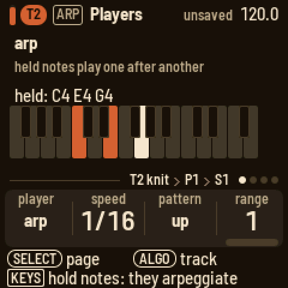
- arp plays the held notes one after another: speed (1/4 to 1/64, with triplets), pattern (up, down, up down 1, up down 2, as played, random) and range on page 1; page 2 has the note length, a style, glide and stereo; page 3 is hold.
- strum plays a chord from one key, built on that key in the conductor's key and scale: a triad at first, so the white keys in C major give C, Dm, Em, F, G, Am and Bdim (the harmonic field). Hold keys together, up to eight, and they become the chord (they sound as you hold them); from then on one key plays that chord moved along the scale (a C7 gives Dm7 on D, G7 on G: a note outside the scale keeps its place). A key outside the scale plays the chord as you held it, moved there as it is. Roll strums it, up to one note per step.
- hold keeps the notes you play until the next.
The arp and the strum play the track's steps too. A step's notes are arpeggiated for as long as the step lasts (give it a longer LENGTH for more notes), together with any keys you hold. A step with a chord is strummed in the strum's direction and roll, every note ending with the step; a step with one note strums the strum's chord from that note, as a key does. Changing the player, or turning its hold off with no key down, lets go of what it was holding.
Arrange, scenes and the song
Press HOME. Each row is a track with its pattern and a playhead, and at its left a small meter of what it plays (COND's and THROW's: lit while a step of theirs plays); muted tracks are dimmed. The scene's number is at the right, with the next one when a scene is cued, the beats until it starts and its key blinking. The 16 white keys are scenes 1 to 16; OCT+ puts 17 to 32 on them (OCT− back; the dots at the right show all 32, a mark beside the rows the keys have now, and the keys follow the scene playing). Stopped, a press switches at once. Playing, the scene starts at the next bar line; press its key again to switch at once, or press the scene playing to take the cue back. SEL's SCENES SWITCH set to "pattern end" makes a key wait for the end of T1's pattern instead: the tracks can have different lengths and drift apart, so T1's pattern is the scene's length (on a 64-step T1, up to four bars). Turning PRESETS cues the next scene for the bar the same way. An empty scene becomes a copy of the scene playing. Hold a white key for a second to clear that scene. The black keys mute: 1 to 8 the tracks, 9 and 10 the conductor and the throws. A kit track's black key mutes it when you let go; hold it instead and press white keys 1 to 11 to mute that kit's sounds one by one (lit: playing), in this scene (each kit its own, for the first four kit tracks; the row says how many are off). A muted sound still drives the pump; its key still plays when you press it. Hold HOME and turn PRESETS to change scenes from any page.
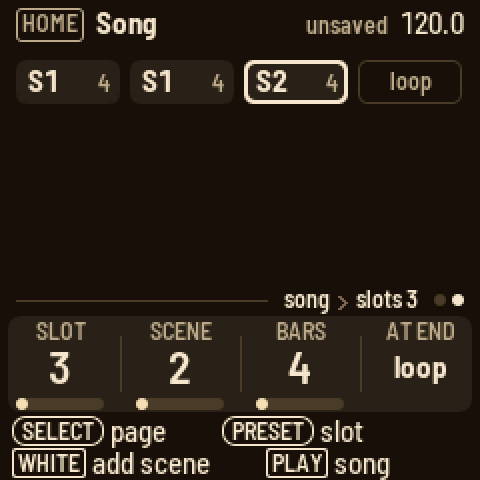
KNOB 1 is the tempo (hold HOME for tenths), KNOB 2 the groove type (swing, lilt, weave, stretch, drunk, jitter, accent, lazy, push pull, sway, swell), KNOB 3 the selected track's groove amount from −99 to 99, and KNOB 4 the selected track's pattern in this scene ("T2 PAT"; ALGORITHM picks the track; playing, it comes at the track's next bar line): a scene's patterns, track by track, without leaving Arrange. The click is on REC's knobs.
Turn SELECT for the Song page. Press a white key to add that scene after the slot picked (OCT+: scenes 17 to 32); the knobs move to the new slot, which plays as many bars as the one before it (the first: four). KNOB 1 picks the slot, KNOB 2 changes its scene, KNOB 3 how many bars it plays (1 to 64; a bar is 16 sixteenths, whatever the patterns' lengths, so a 64-step pattern takes four), and KNOB 4 whether the song loops or stops at the end. PLAY on the Song page plays the song from the slot picked; SEL's PLAY SONG plays it from the top. As it plays, a bar along the playing slot's foot fills over its bars. SEL also inserts the scene playing, deletes a slot or clears the song.
The aux tracks
Turn ALGORITHM past T8. Each aux track has its own page under EDIT and its own steps under SEQ.
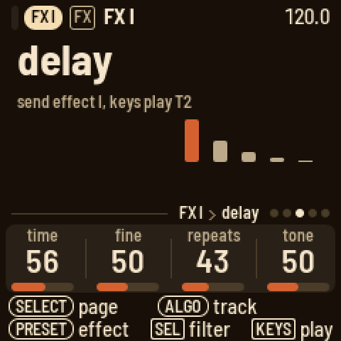
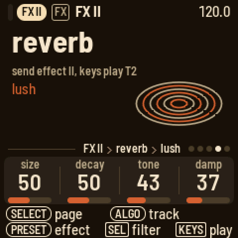
- COND (the conductor): key, scale and link, an instrument track that also plays the conductor's keys. Play a chord on its keys: the tracks that follow move to it. Its steps hold the chords you played: press SEQ and a white key. Set the track scale to 4 so a step is a beat, or 16 for a bar. Page 2 is the routing: black keys 1 to 8 toggle a track. Its SEL list sets how each track follows, diatonic or transpose only. Drum tracks never follow.
Page 3, Follow, takes the chords from a track instead: press its black key (again: off), or turn KNOB 1. Each note that track plays, its lowest on a step or among the keys held, sets the chord, so a chord part or a bass line leads the others. The note's place in the scale counts, not its octave, and the others move the nearer way (in C major, a G takes them down a fourth, an F up a fourth). The track itself plays as written and follows nothing; muted, it still leads. While a track leads, the conductor's own steps rest; its keys still change the chord until the track's next note. A kit has no notes to lead with.
- WEAVE (the weaves): its white keys 1 to 10 weave T1 to T8, COND and THROW while held (latch: a tap on, a tap off), each as its ARP's Weave page sets it; REC records them onto its steps. See Weave, above.
- THROW (the throws): the keys fire the throws on the drum tracks (lower octave) and the melodic tracks (upper octave). Slice tracks count as drums: their fills play the pattern's own slices (the one on the downbeat as the kick, the backbeat's as the snare, an off-beat's as the hat), and octave takes them up. The last one you played is the one a step writes. KNOB 1 is latch: a key then toggles its effect.
| Key of the octave | Effect |
|---|---|
| white 1 | mute: silences the group |
| white 2 | stutter: a fast loop from where the throw starts |
| white 3 | repeat: a slow loop |
| white 4 | echo: the loop repeats and fades |
| white 5 | build: a fill that builds |
| white 6 | floor: four on the floor |
| white 7 | jumble: a random fill |
| black 1 | warble: high-passed drums, vibrato on melodic notes |
| black 2 | pan: the sounds move across the field |
| black 3 | octave: drums an octave up, melodic tracks an octave down |
| black 4 | chop: short notes |
| black 5 | ring: long notes |
Let a loop throw (stutter, repeat, echo) go and the track comes back in time, at the step it would be at had it never looped. GLO's SEL list, LOOP THROWS "drift", leaves it where the loop left it instead: out of step with the others, until a scene or the transport sets it straight.
From any track, FX's last page, Throws, has the same keys and the latch.
- FX I and FX II: a send effect each: chorus, delay, lofi, phaser or reverb, with its four knobs. Press FX and turn SELECT to reach them from any track: PRESETS picks the effect, and SEL has its high-pass, low-pass and, on FX I, the send into FX II (a new project's high-passes keep the lows dry: the echoes from about 130 Hz, the reverb from about 230 Hz). The keys play the track you were on. Turned to with ALGORITHM, they have the same knobs on EDIT.
| Effect | Knobs |
|---|---|
| chorus | rate, depth, feedback, width |
| delay | time, fine, repeats, tone (how bright the repeats are) |
| lofi | rate, bits, smooth, width |
| phaser | freq, depth, rate, feedback |
| reverb, plate | size, motion, tone, damp (how fast the tail darkens) |
| reverb, the other modes (lush too) | size, decay, tone, damp |
The effects return only what they make: the track's own sound stays on the track.
The reverb has eleven modes, and PRESETS walks through them after the phaser: plate, LOOM-8's own; nine from the PlayStation's sound chip, the reverbs its games used: room, studio S, studio M, studio L (small, medium, large), hall, half echo, space echo, chaos echo (it almost never stops) and one echo (a single repeat); and lush, a smooth, wide plate (based on Jon Dattorro's), the reverb of a new project. The console's keep its grain: they run at half the sample rate, as lush does. On these, size stretches their delays, from small and metallic at 0 to the console's own at the top (the new mode's starting point); decay sets how long the tail lasts, the console's own in the middle; tone darkens the tail below the middle and thins it above; damp softens the reflections. Changing the mode empties the reverb for a moment. On lush, size also lengthens the gap before the tail, and damp darkens the tail as it fades. Only FX II has the reverb: FX I has the delay's memory instead.
Mix and master
Press GLO. The Mix page shows a meter for each track. A black key picks its track: a tap mutes or unmutes it, and holding it solos the track until you let go; hold several to solo them together (each one let go leaves the solo, the last one brings the mutes back as they were). The knobs are the sends to FX I and FX II, the pan and the level (a drum track's sends are its keys': FX, Sends). Turn SELECT for Master EQ (low, mid and high; 64 is flat), Master color (below) and Master out (the drums' level, the melodic tracks' level, the compressor and the pump; its SEL list has what the pump follows, its release and accent, and the output level). Setup's knobs are the lights, sending MIDI clock, sending MIDI notes (on in a new project) and the theme (tape deck or blueprint); the page also says where the tempo comes from (LOOM-8, or a MIDI clock coming in), the USB audio level, the autosave and the version, and GLO's SEL list sets the USB audio level, LOOP THROWS, AUTOSAVE, CC OUT and SCENES OUT. The header shows the scene playing ("S3") before the tempo, on every page. The projects are on HOME's SEL list; the count-in is on REC's knobs.
LFO (after Master out) is the shared LFO: one for the project, moving the tracks you give it, so a single sweep can open the filters of a few tracks together, or breathe across a 16-bar section of a one-bar loop. KNOB 1 its shape (off, sine, triangle, saw up, saw down, square, random), KNOB 2 its rate (16 bars to a sixteenth, in time with the tempo, or 0.02 to 10 Hz free), KNOB 3 how much (either way), KNOB 4 what it moves: cutoff, resonance, pitch (up to 12 semitones), pan, volume, the FX I or FX II send, or the character's amount. Black keys 1 to 8 pick the tracks it moves (lit). It starts again from its beginning when PLAY starts, so a long sweep lines up with the bars. On a kit it moves every sound, or one: white keys 1 to 11 pick it (a hat's pitch, the snare's send), white key 12 every sound again; the character's amount is the kit's whole.
Master color gives the whole mix a colour after the EQ: color picks it, amount, tone and mix shape it. tape is worn tape: a slow wow and a quick flutter on the pitch (more with the amount), a soft saturation and a gentle roll-off of the top (tone: where it starts, 1.5 to 18 kHz). sampler is an old sampler's grain: the mix held at a lower rate and fewer bits (amount: 26 kHz and 14 bits down to 11 kHz and 11 bits), then its filter (tone). off (a new project's) leaves the mix as it is. The same two are on each synth track's Character page, for one sound.
Pump (Master out's fourth knob) lowers the mix each time the kick plays, by up to 24 dB, and lets it swell back up: the big-beat breathing of house and French touch. Driven by a kit (its kick, or a kit track), it lowers the melodic tracks and leaves the drums alone, so the kick that drives it keeps its punch; driven by a melodic track or the metronome, it lowers everything. Accented kicks pump harder. It works even with comp at 0, and even when the kick is muted, so a silent kick can drive it: write a kick on a track, mute it, and the mix breathes to a beat nobody hears. At 0 (a new project's) it is off. Its SEL list:
- pump by: what drives it. kick is any kick of a kit (black key 1, or any key with the kick model); T1 to T8 is that track: a kit's kicks (so one kit's kick, not another's, drives it), or any note of a melodic track (a bass, a chord, a muted ghost track); metronome is the click, on every beat while it sounds.
- release: how fast the mix swells back, 10 ms to 1.5 s (107 ms to start with). Longer releases breathe across the beat; short ones only nick the kick's tail.
- accent: on, a hit pumps by its velocity (a soft one about half as deep as a full one); off, every hit pumps fully.
- level: the output level, the drive into the limiter (100 is unity).
The pump is the whole mix's; a track's own pump LFO (above) still ducks just that track, for a bass that gets out of the kick's way while the rest plays on.
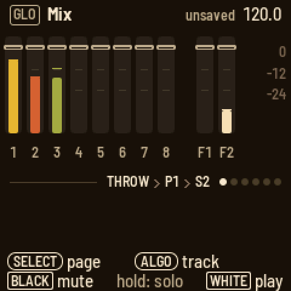
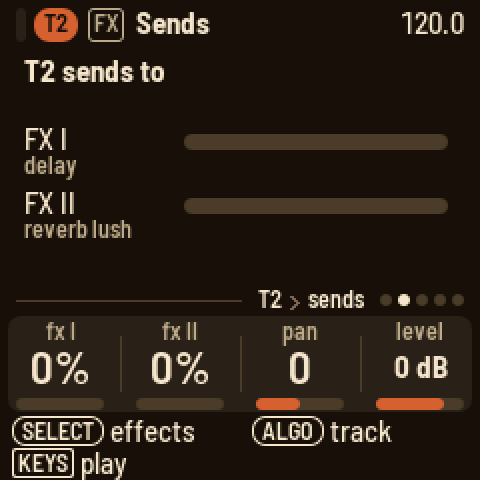
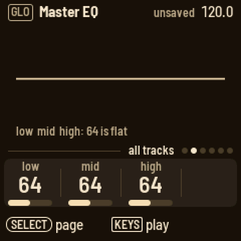
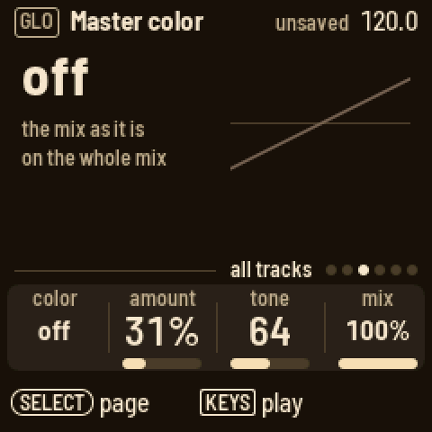
MIDI
Over USB each track has its own channel: T1 to T8 on channels 1 to 8, FX I on 9, FX II on 10, and the master and the scenes on 11; notes on 12 to 16 play the instrument track selected (notes on 9 and 10 do nothing). A track's SEL list on its sound pages has MIDI OUT (on in a new project; an old project's channel number reads as on): its notes go out on its own channel, with Setup's NOTES on. Notes that come in play the track (and record) but aren't sent back out, nor the arp or strum they start, so a DAW that sends them back doesn't loop; the keys you play on LOOM-8 and the sequencer's notes go out. A track's arp, strum or hold follows the last key that played it: a note from your DAW joining the arp you're holding on LOOM-8 keeps the arp off MIDI out until you play a key on LOOM-8 again.
A CC moves the matching knob or switch, scaled to its range (on 12 to 16: the instrument track selected's):
| CC | Synth track | Kit track |
|---|---|---|
| 7 | level | level |
| 10 | pan | pan |
| 91 / 93 | send I / send II | every sound's send I / II, moved by the same amount |
| 9 | mute (64 and up: muted) | mute |
| 74 | cutoff | the bus's hi cut |
| 71 | resonance | the bus's low cut |
| 73 | attack | kit attack |
| 72 | release | kit length |
| 75 | decay | - |
| 5 | glide | - |
| 1 | LFO amount | - |
| 16-26 | - | mute sound 1-11 (64 and up: muted) |
| 80-90 | - | pan of sound 1-11 |
| 102-112 | - | level of sound 1-11 |
| CC | FX I / FX II | Master |
|---|---|---|
| 7 | return level | level |
| 16-19 | the effect's four knobs | EQ low / mid / high |
| 20-23 | - | color type / amount / tone / mix |
| 24-27 | - | drums level / melodic level / comp / pump |
| 28 | - | pump release |
| 74 / 75 | low-pass / high-pass | - |
| 93 | feed into FX II (channel 9 only) | - |
A mute (CC 9, or 16 to 26 on a kit) does what the Mix page's mute does, saved into the scene playing; a kit's sound mutes work on the first four kit tracks, as on Arrange. While recording (REC held as it plays, or kept on with REC and PLAY), a CC on a track's parameter records into that track's own automation.
Scenes: Program Change 0 to 31 on channel 11, or notes 36 to 67 (C1 up) there, pick scenes 1 to 32 the way Arrange's white keys do (SCENES SWITCH decides when).
CC OUT, in GLO's SEL list (on in a new project): a mapped knob or SEL row turned by hand sends its CC on its channel, when the track's MIDI OUT is on (FX and the master: always); what comes in, a lock, automation and a preset are never sent back, nor a kit's 91 / 93 (each sound's own send is a parameter of its own, unmapped).
SCENES OUT, after CC OUT in GLO's SEL list (off in a new project): a scene changed on LOOM-8, or by loading a project, sends its Program Change on channel 11; one that came in over MIDI isn't sent back.
Saving
At power-on LOOM-8 opens the project you saved or loaded last. It saves by itself: three seconds after your last change, once it is stopped and silent (writing to the flash would cut the sound). The header says "unsaved" and SAVE lights until then. Press SAVE to save at once. To save to another slot, hold SAVE and press white key 1 to 3, or use HOME's SEL list: SAVE TO (turn ALGORITHM to the slot); LOOM-8 asks first if the slot holds another project. NEW PROJECT starts in the first empty slot; when all three are taken it has none, and waits for SAVE TO before it saves. To save only when you press SAVE, set AUTOSAVE to off in GLO's SEL list (Setup shows it); a new project keeps the choice.
A new project starts with a band picked at random from the factory presets: the kit on T1, then a bass (mono), a polyphonic synth, a pad, a mono lead, keys, an effect and a pluck or bell on T2 to T8, every track following the conductor. RANDOMIZE PRESETS on HOME's SEL list picks another band for T2 to T8 (it asks first); the patterns, the kit and the mix stay. A project saves every knob as you left it, not the preset it came from.
Projects have no names. A project is its slot: LOAD PROJECT and SAVE TO show Proj 1, Proj 2 and Proj 3 (and which are empty, and which is open).
Older projects. Projects saved by 0.5-beta to 0.5.4-beta load and are converted: their scenes into the thirty-two, MIDI notes on, T1 to T8 on channels 1 to 8. Projects saved by this version do not open in older ones.
Backup. To keep the three projects and the user presets on a computer, and put them back later, open <https://charlesvestal.github.io/fm1-loom/backup/> in Chrome or Edge with the FM-1 connected by USB (or run python3 base/tools/fm1_backup.py backup FILE --magic LM8B from the firmware's folder; restore FILE puts it back). A backup holds them as saved: save first what you want in it. Putting one back replaces all three projects and the presets; LOOM-8 asks first, on its screen (SEL yes, HOME no), and only while stopped. Your own samples are not in a backup: keep their WAV files, and load them again on the Samples page.
On a sound page, hold SAVE and press white key 1 to 16 to keep the track's sound as that user preset.
Page by page
| Button | Page | KNOB 1 | KNOB 2 | KNOB 3 | KNOB 4 | Keys |
|---|---|---|---|---|---|---|
| HOME | Arrange | tempo | groove | amount | the track's pattern | white: scenes (OCT: 17 to 32), black: mutes (a kit's held: white 1-11 its sounds); SEL: load, save to, new project, randomize presets, the song, when scenes switch |
| HOME, SELECT | Song | slot | scene | bars | at end | white: add a scene (OCT: 17 to 32) |
| SEQ | Steps | pattern | length | scale | groove | white: steps, black: sound (drums); SEQ held: a keyboard |
| SEQ, a step held | Steps | velocity | length | chance | pitch | white: length, black: sounds |
| SEQ, a step held + ARP | Steps | trick 1 | its value | trick 2 | its value | |
| SEQ, SELECT | Bar | quant | note | groove | shape | black: scale; SEQ held, black 1-4: jump or loop bars |
| EDIT | Engine | the engine's four | play | |||
| EDIT, SELECT | Play | mode | porta | bend | volume | play |
| EDIT, SELECT twice | Play 2 | octave | play | |||
| EDIT, SELECT 3 times (knit) | Sub | osc 2 | level | sub | noise | play |
| EDIT, SELECT 3 times (rayon) | Sub | fall | floor | keyscale | play | |
| EDIT, SELECT (sample, loop modes) | Loop | loop start | loop len | play | ||
| EDIT, drum track | Engine, Key, Sends | the key's knobs; model, random, pan, volume; its fx I, fx II | black: the key | |||
| ENV | Envelope | attack | decay | sustain | release | play |
| ENV, SELECT | Filter | cutoff | reso | env | keytrack | play; PRESETS: the type |
| ENV, SELECT twice | Filter env | attack | decay | sustain | release | play |
| ENV, drum track | Envelope | the key's attack | hold | decay | lag | black: the key |
| ENV, drum track, SELECT | Filter | the key's cutoff | reso | env | drive | black: the key; PRESETS: the type |
| ENV, drum track, SELECT twice | Kit env | lag | attack | random | length | play |
| ENV, drum track, SELECT 3 times | Kit filter | low cut | comp | drive | hi cut | play; PRESETS: on or off |
| FX | Character | type | amount | tone | mix | play; PRESETS: the type |
| FX, SELECT | Sends | fx I | fx II | pan | level | play |
| FX, SELECT twice | FX I, FX II | the effect's four | play; PRESETS: the effect (and the reverb's mode) | |||
| FX, SELECT four times | Throws | latch | low: drum throws, high: melodic throws | |||
| LFO | LFO | type | the type's three | play | ||
| LFO, SELECT | LFO 2 | the type's fourth and fifth | play | |||
| ARP | Players | player | its first | its second | its third | play, through the player |
| ARP, SELECT | Players 2, Hold | the arp's length, style, glide, stereo; hold | play | |||
| ARP, SELECT (last) | Weave | with | pattern | rule | plays | black: the track woven in, white: its pattern; SEL: KEEP AS PATTERN |
| GLO | Mix | FX I | FX II | pan | level | black: a tap mutes, held: solo (several together) |
| GLO, SELECT | Master EQ | low | mid | high | ||
| GLO, SELECT | Master color | color | amount | tone | mix | |
| GLO, SELECT | Master out | drums | melodic | comp | pump | SEL: pump by, release, accent, level |
| GLO, SELECT | LFO | shape | rate | amount | dest | black: the tracks it moves; white 1-11: a kit's sound, 12 all |
| GLO, SELECT | Setup | lights | clock | notes | theme | SEL: USB audio, loop throws, autosave, CC out, scenes out |
The aux tracks' EDIT pages: COND has key, scale and link, page 2 the routing (black keys toggle a track) and page 3 Follow (KNOB 1, or a black key: the track the chords come from); THROW has latch; WEAVE has latch; FX I and FX II have the effect's four knobs, and on page 2 hp, lp and the send to FX II.
Screen reader
Connect the FM-1 by USB and open https://charlesvestal.github.io/fm1-reader/ in Chrome or Edge. LOOM-8 says each page, knob value, step, scene and message as it changes, and the whole screen when you ask. The words it uses are published with this site, so every version reads its own screen correctly.
Credits
LOOM-8's way of working owes a great deal to teenage engineering's OP-XY; LOOM-8 is not affiliated with teenage engineering. Built on fm1-base and felucca-bsp, from Felucca by Leo Kuroshita (Hügelton Instruments), with Polly's menus and X0X's sequencer discipline. Cane and voile are Mutable Instruments Braids by Émilie Gillet (MIT); the reverb's PlayStation modes are PSXVerb's. The factory breaks are free loops by u/FCTRYBEATS, the 909 drums renders of 9W9, and the recorded instruments from the Versilian Studios Chamber Orchestra 2 Community Edition (CC0).